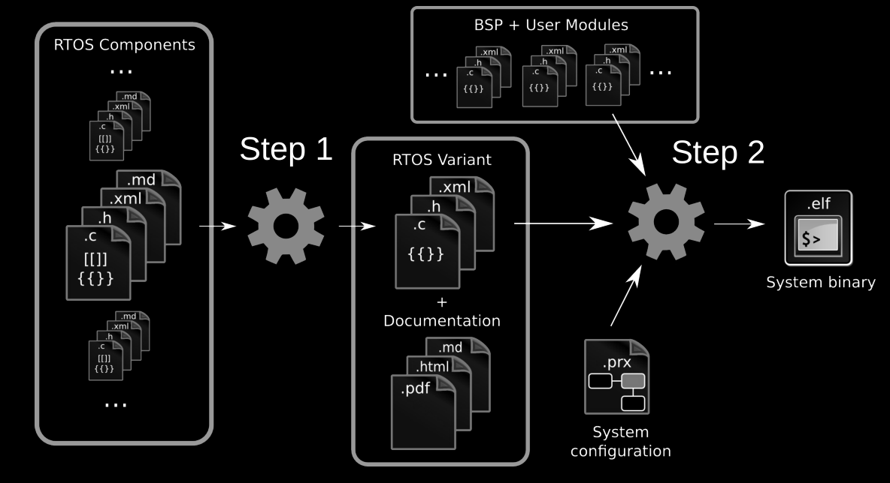

Memory Protection in eChronos
Trying to force sane behaviour into teeny hardware
Seb HolzapfelWhat am I doing here
- eChronos/lwIP (linux.conf.au) [3 months]
- eChronos VGA demo (D61+) [2 months]
- CAN Daughterboard [2 months]
- Quadcopter Daughterboard [6 months]
- Memory protection [6-week]


Why is eChronos interesting?
High-assurance
A model of the RTOS' architecture is being mathematically verified*
A model of the RTOS' architecture is being mathematically verified*
Miniscule overhead
Component-based construction means that the overhead of using this RTOS is kept at a minimum. How? 2 stages.
Component-based construction means that the overhead of using this RTOS is kept at a minimum. How? 2 stages.
*model-checking for adherence to our specification without unintended side-effects (abstract, not code-level). 'Progress' proofs would be even nicer, perhaps a future project
eChronos: intended for μcontrollers
Tiny amounts of RAM. Talking KB, not GB!
Trade-offs...
- No MMU or multicore support
- No POSIX API
- No dynamic memory management
- No device drivers
Why memory protection?
- 'Filling the gap' (bare metal eChronos, seL4)
- Without memory protection, all tasks run privileged
- Can crash the system (or worse!) with:
- Stack overflows
- Tasks modifying kernel memory
- Tasks corrupting other tasks' memory
- Writing into code segments
- Tasks accessing devices incorrectly
- Trusting a huge library that might have a bug
- Memory protection allows us to respond deterministically:
- Hard reboot
- Emergency state
- Restart the offending task
Safety, not security
- Threat model is human error, not malicious code
- Hardware too limited for conventional security policies
- Must have source to generate an RTOS binary
- library RTOS - shoot yourself in the foot if you really want
- Goal: more difficult to make implementation mistakes
RTOS Mem. Protection Landscape
Have official support
- Sloth RTOS (world's fastest!)
- FreeRTOS
- SMX RTOS
- Segger embOS
- AUTOSAR
- eChronos (Soon!)
No support
- Zephyr RTOS
- Contiki OS
- TI-RTOS
- Micrium uC/OS - used to?
- uKOS
- Prex
- Everything else!
Protection Model
Task-Task isolation
- Restrict accessible memory in tasks to an absolute minimum
- All code R/O (i.e AUTOSAR, Sloth, FreeRTOS, all others...)
Task-Kernel isolation
- Only kernel can perform critical operations - configuring the MPU
- Lot for free, if tasks aren't explicitly granted access to kernel memory
No protection hardware..
Memory Protection Unit (MPU)
Why MPU and not MMU?
- Less complicated to implement = cheap, lower power consumption

ARM Cortex-M Features
| Feature | M0 | M0+ | M1 | M3 | M4 | M7 |
|---|---|---|---|---|---|---|
| SysTick | Opt. | Opt. | Opt. | Yes | Yes | Yes |
| MPU (Regions) | Opt. (8) |
Opt. (8) |
Opt. (8) |
Opt. (8,16) |
||
| Architecture | Von Neumann | Von Neumann | Von Neumann | Harvard | Harvard | Harvard |
Cortex-M MPUs have
- 8 protection regions - or 16 on some M7s (rare)
- Must re-load on a context switch
- Each region has NA/RO/RW & EXEC flags
- Each region has a base address and region size
- Region size must be a power-of-2
- Base address must be aligned to region size
- Can configure regions to be active in user mode but not privileged mode, or to be active at all times
Protection Domains
- Named area of memory
- Tasks are only linked to domains they require
- No domains? Stack-only task
- R/O by default, must annotate for X, RW.
Domains Example - Task A
Domains Example - Task B
eChronos: how it fits together...
 *image from RobS's eChronos Monday talk 2 years agoDeclaring protection Domains
- 'Address' domain - fixed size & address (i.e peripherals)
- 'Symbol' domain - c identifiers or object files.
Example:
...
<protection_domain>
<name>peripheral_uart0</name>
<domain_size> 0x00001000</domain_size>
<base_address>0x4000C000</base_address>
</protection_domain>
...
<protection_domain>
<name>uart_state</name>
<domain_size>32</domain_size>
<symbols>
<symbol>uart_on</symbol>
</symbols>
</protection_domain>
...
Using protection Domains
<task>
<name>task_uart</name>
<function>task_uart_fn</function>
<priority>30</priority>
<stack_size>128</stack_size>
<associated_domains>
<domain>
<name>uart_state</name>
</domain>
<domain>
<name>peripheral_uart0</name>
<writeable>true</writeable>
</domain>
</associated_domains>
</task>
'System Calls'
- Everything runs in the same address space
- Try to execute a syscall from a task, we get an MPU fault i.e:
Solution: Inline Traps
- Fastest solution, simple to implement
- Can verify with binary analysis
- All automatic! didn't have to modify every kernel function.
Build Process
With no optimization...
Sloth RTOS
Results from paper 'Safer Sloth', on unnamed Cortex-M3
| Operation | Cycles |
|---|---|
| Context switch | ~39 |
| Inline trap | ~34 |
| MPU reconfigure | ~130 |
eChronos RTOS
Results on acamar variant, on TI Cortex-M4, 10k trials, H/W cycle counter
| Operation | Cycles |
|---|---|
| Context switch | 48 |
| Inline trap | 44 |
| MPU reconfigure | ~155 |
With a weekend of optimization...
Sloth RTOS
Results from paper 'Safer Sloth', on unnamed Cortex-M3
| Operation | Cycles |
|---|---|
| Context switch | ~39 |
| Inline trap | ~34 |
| MPU reconfigure | ~130 |
eChronos RTOS
Results on acamar variant, on TI Cortex-M4, 10k trials, H/W cycle counter
| Operation | Cycles |
|---|---|
| Context switch | 48 |
| Inline trap | 38 |
| MPU reconfigure | 58 |
> 2x faster MPU reconfiguring! (real Sloth is even slower!?)
USB Demo Architecture
USB Stack Demo
USB Demo - a small cheat...
int usb_device_irq(void) {
// Get the controller interrupt status.
usb_device_driver_status = MAP_USBIntStatusControl(USB0_BASE);
// Disable the USB interrupt, otherwise it will constantly fire
// until handled - which we're about to do.
ROM_IntDisable(USB_IRQ);
// Wake up the USB device driver task
rtos_interrupt_event_raise(RTOS_INTERRUPT_EVENT_ID_USB_DEVICE);
return true;
}
void task_usb_device_driver_fn(void) {
while(1) {
rtos_signal_wait(RTOS_SIGNAL_ID_USB_DEVICE_INTERRUPT);
// Call the internal handler.
USBDeviceIntHandlerInternal(0, usb_device_driver_status);
PRIVILEGED_ACTION(IntEnable(USB_IRQ));
}
}